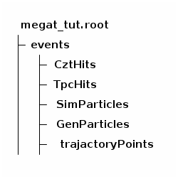
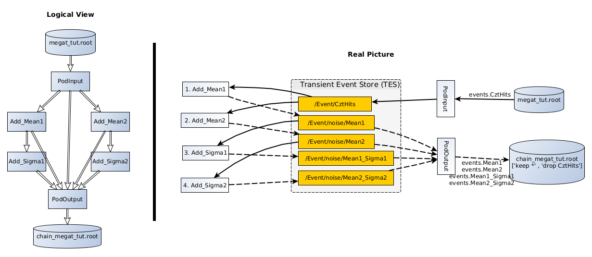

<-cursor right here

https://github.com/MegMev/mgtut/blob/main/doc/data_access.html
https://github.com/MegMev/mgtut.git
Any issues?
An example showing how to chain several algorithms and how later algorithm can access output from any previous algorithms (a big plus against REST).
job option: https://github.com/MegMev/mgtut/blob/main/examples/options/tut_chain.py
